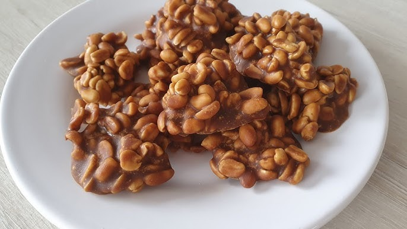

Chocolate Quente Cremoso
Uma receita simples, rápida e muito fofinha.

Receita muito deliciosa, experimente!
- Julia Damo
Ver ingredientes e modo de preparo →
Uma receita simples, rápida e muito fofinha.
Receita muito deliciosa, experimente!
- Julia Damo
Uma sobremesa deliciosa

Receita muito boa, eu recomendo.
- Prof. Pablo Leon Rodrigues
Um doce tradicional e fácil de fazer

Receita ótima, recomendo experimentar.
- Lourdes Dall Orsoletta Damo
Uma receita simples, rápida e muito fofinha.

Bom apetite!
- Julia Damo